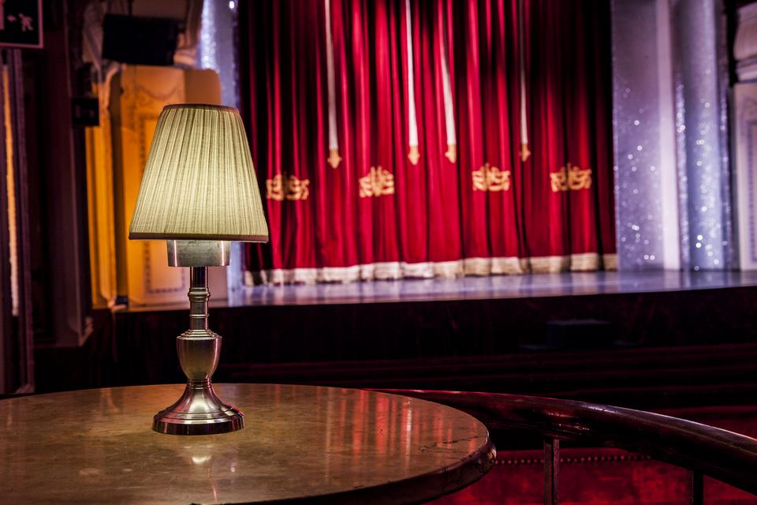

All the events of CIFRIS24 take place in Bank of Italy's conference theater "Salone Margherita", located in Via Due Macelli 75 – 00187 Roma (Italy). Salone Margherita was built in 1898 as a café-chantant and became one of the most famous theatres in Rome.

Read more about the location on